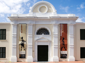

THAPELO MMAKOLA 
CITY
CAPE TOWN
a port city on South Africa’s southwest coast, on a peninsula beneath the imposing Table Mountain. Slowly rotating cable cars climb to the mountain’s flat top, from which there are sweeping views of the city, the busy harbor and boats heading for Robben Island, the notorious prison that once held Nelson Mandela, which is now a living museum.
FOREIGN LANGUAGE
The language i would like to learn is FRENCH
| English | French |
| Morning | Matin |
| night | nuit |
| noon | midi |
HISTORICAL PLACES
CASTLE OF GOOD HOPE - 8 MIN WALK
The Castle of Good Hope known locally as the Castle or Cape Town Castle is a bastion fort built in the 17th century in Cape Town, South Africa. Originally located on the coastline of Table Bay, following land reclamation the fort is now located inland.
IZIKO SLAVE LODGE - 8 MIN WALK 
The Slave Lodge is a South African social history museum located in Cape Town. It has been on its present site in the Company's Garden.
LONG STREET - 13 MIN WALK
The CBD is the heart of Cape Town, and Long Street is its major artery. Running all the way from the Cape Town Convention Centre, cutting through the middle of the CBD, and ending at Kloof Street, Long Street is a major part of the city’s street culture. During the day the street is a full with people visiting the interesting shops and café that line the street, and when the sun drops behind the mountain the activity intensifies around the street’s many restaurants, bars, and clubs. If you’re looking to get a headstart on exploring Long Street, then here is what you need to know.